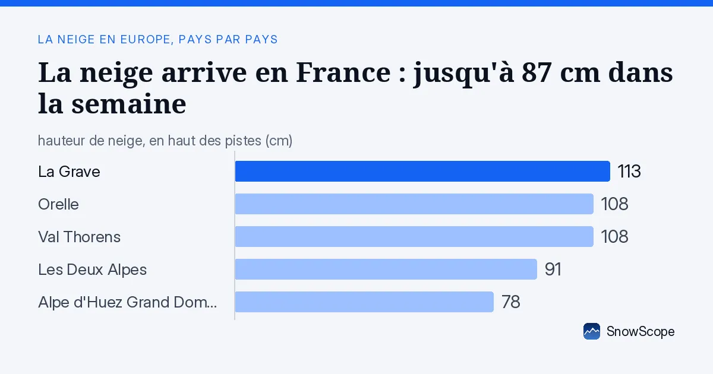

Bulletins neige · La neige en Europe, pays par pays
La neige en Europe, pays par pays: La semaine à venir pourrait apporter jusqu'à 87 cm sur les pentes les plus arrosées en France, dont 72 cm dans les …
La neige par pays aujourd'hui
Les pays les plus blancs aujourd'hui : Suède (95 %), Norvège (92 %) et Finlande (77 %).
Le plus de neige fraîche dans la semaine : France (92 cm), Suisse (74 cm) et Italie (62 cm).
| Pays | Blanc | Station la plus enneigée | 7 prochains jours |
|---|---|---|---|
| Suède | 95 % | Björkliden · 138 cm | 12 cm |
| Norvège | 92 % | Riksgränsen · 167 cm | 26 cm |
| Finlande | 77 % | Pyhä · 30 cm | 8 cm |
| Suisse | 64 % | Anzère · 86 cm | 74 cm |
| Autriche | 56 % | Stubaier Gletscher · 63 cm | 35 cm |
| Ukraine | 52 % | Драгобрат · 17 cm | 17 cm |
| Italie | 26 % | Pfelders · 118 cm | 62 cm |
| France | 14 % | Orelle · 136 cm | 92 cm |
| Slovaquie | 14 % | Vysoké Tatry · 34 cm | 11 cm |
| Royaume-Uni | 13 % | Yad Moss · 24 cm | 16 cm |
| Pologne | 11 % | Kasprowy Wierch · 36 cm | 14 cm |
| Roumanie | 11 % | Balea Lac · 16 cm | 37 cm |
| Slovénie | 10 % | Sella Nevea · 28 cm | 53 cm |
| Allemagne | 7 % | Zugspitze · 81 cm | 26 cm |
| Andorre | 5 % | Canaro · 15 cm | 26 cm |
| Albanie | 4 % | – | 34 cm |
| Monténégro | 3 % | Ski centar Savin kuk · 11 cm | 32 cm |
| Tchéquie | 2 % | Ramzová · 13 cm | 10 cm |
| Bulgarie | 1 % | Bansko · 10 cm | 22 cm |
| Macédoine du Nord | 1 % | – | 26 cm |
| Kosovo | 1 % | Brezovica · 1 cm | 42 cm |
| Bosnie-Herzégovine | 0 % | – | 18 cm |
| Espagne | 0 % | Estació d'Esquí Baqueira-Beret · 12 cm | 21 cm |
| Grèce | 0 % | – | 3 cm |
| Croatie | 0 % | Sljeme · 5 cm | 26 cm |
| Hongrie | 0 % | – | 17 cm |
| Irlande | 0 % | – | 11 cm |
| Portugal | 0 % | – | 8 cm |
| Serbie | 0 % | – | 7 cm |
La neige arrive en France : jusqu'à 87 cm dans la semaine

La semaine à venir pourrait apporter jusqu'à 87 cm sur les pentes les plus arrosées en France, dont 72 cm dans les trois prochains jours. Le gros jour semble être le vendredi 20 novembre, avec jusqu'à 33 cm.
La neige qui arrive
Les prévisions à cette échéance bougent. Le moment est souvent plus fiable que les quantités : gardez un plan souple et revérifiez deux jours avant de partir.
8 720 km² de terrain enneigé en France ce mardi, en baisse de 730 km² sur un jour. Environ 10 % des montagnes et collines cartographiées du pays sont couvertes.

La surface enneigée de la France est passée de 6 040 km² à 11 870 km² en une semaine. Le massif du Mont Blanc a reçu 240 cm en 72 heures au 19 novembre.

Les profondeurs de neige en Suisse le 19 novembre sont bien au-dessus de la normale. Glacier 3000 affiche 60 cm, plus du double de la profondeur typique à cette date. La semaine prochaine apportera jusqu'à 125 cm supplémentaires.

De la neige fraîche est tombée sur les hautes montagnes françaises au cours des 72 dernières heures. Le massif du Mont-Blanc en a reçu le plus : 180 cm. Données du 18-11-2026.

Les domaines skiables suisses affichent 142 % de la couverture neigeuse normale pour le 18 novembre. Glacier 3000 domine le classement avec 52 cm, avant l'arrivée de tempêtes majeures.

La neige arrive en France : jusqu'à 87 cm dans la semaine. Couverture, neige fraîche, stations et jours à venir en France le 17 novembre.

De la neige fraîche est tombée de manière inégale sur les montagnes suisses. Les Alpes valaisannes ont reçu 92 cm en trois jours ; l'Oberland bernois 54 cm. Données du 17 novembre.

France ou Suisse ? Où la neige est meilleure le 16 novembre. Couverture, neige fraîche, stations et jours à venir en France le 16 novembre.

Le modèle de neige prévoit 112 cm en Suisse d'ici le 24 novembre, avec 29 cm le 17 novembre. L'eau douce s'accumule dans les hautes Alpes au cours de la semaine à venir.